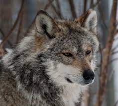

El lobo mexicano
El lobo mexicano es la subespecie más pequeña de las 30 subespecies de Norteamérica. Su hábitat se podía dar en diversos sitios, desde zonas desérticas y semiáridas hasta bosques, extendiéndose por México, Texas y Arizona, ocupando un amplio territorio que posteriormente se vio muy reducido.

Por lo general, son animales de hábitos nocturnos y su dieta se basa en venados, borregos, antílopes, liebres y roedores.
En la época de reproducción, y tras un periodo de gestación de 65 días aproximadamente, los lobos mexicanos nacen ciegos y sordos, por lo que durante las primeras semanas no salen de la madriguera. La madre los amamanta y limpia la madriguera, mientras el macho los protege a pocos metros. En su etapa de desarrollo, tras terminar el periodo de mamar, los cachorros ingieren alimento regurgitado por los padres.
Pero la reducción de sus presas provocó que atacasen al ganado. Eso provocó que los ganaderos y las autoridades los cazasen de forma desmedida y su población descendiese hasta rozar la extinción. Hacia el año 1950, el lobo mexicano prácticamente había desaparecido en estado salvaje.
Los esfuerzos de recuperación comenzaron a finales de la década de 1970 tanto en Estados Unidos como en México, donde se inició un programa de recuperación en cautiverio. El plan ha logrado que, a finales de 2012, se estimaba que vivían 75 lobos en las zonas de recuperación, y posteriormente, en 2014, se produjo el primer nacimiento de un lobo en entorno salvaje tras su reintroducción en la naturaleza.